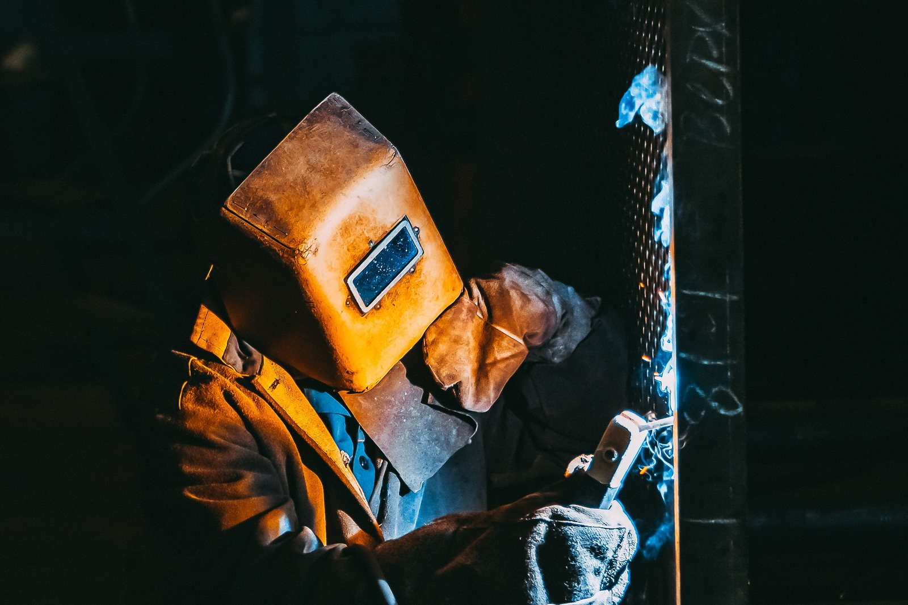

ABOUT
Matcheck builds machines and machine components to exact specification, machined to the thousandth of a millimetre. We would rather you inspect our work than read our brochure.
Matcheck started in 1992 building a weighing machine. One machine led to the next, and the workshop grew from making parts into building machines and machine components for other people.
Today that means machined components, welded machine frames and bases, and complete assemblies for equipment in mining and construction, energy, agriculture, marine, pulp and paper, recycling and wood handling.
Our favourite clients are the ones other workshops find difficult. They send detailed drawings, ask hard questions and check everything. Good. The tolerance, the weld record and the material certificate stay with the job, so there is always an answer.
We are open to any audit. Come and stand on the shop floor at North Reef Park, 62 Serenade Road, Elandsfontein, Johannesburg, and judge the work for yourself.

HOW A JOB MOVES